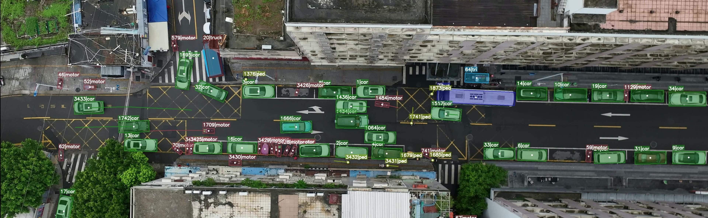
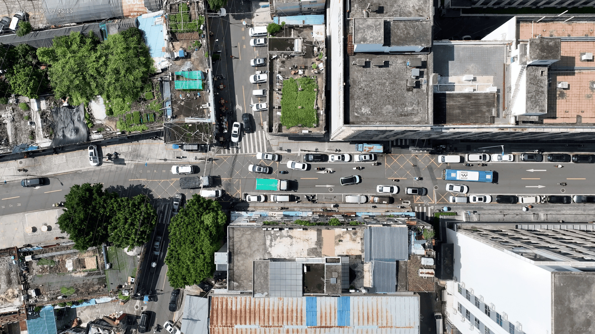
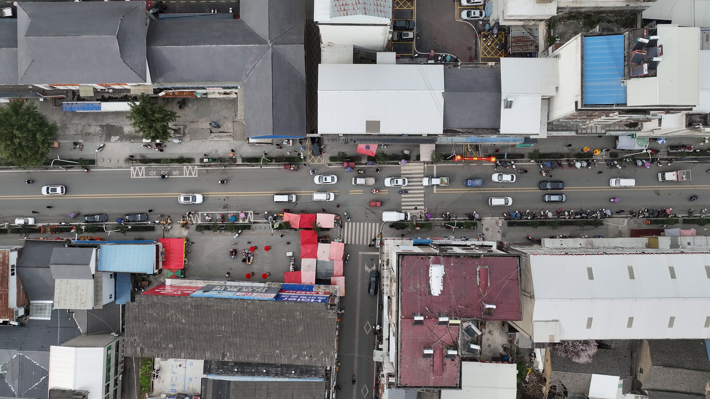
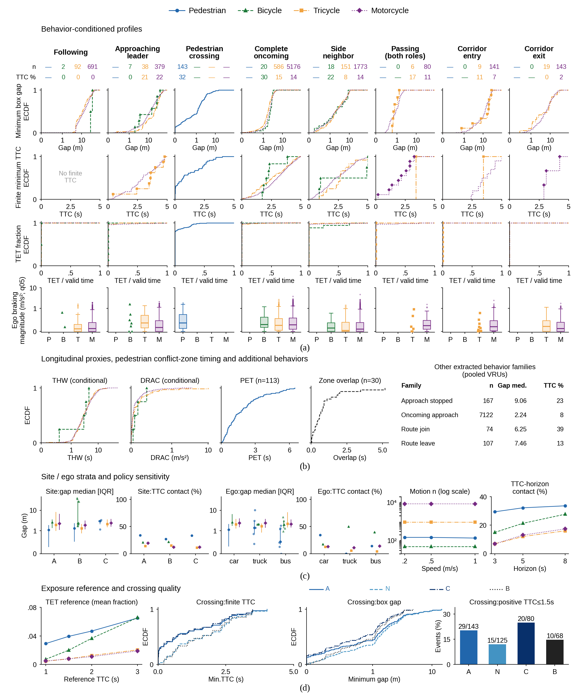
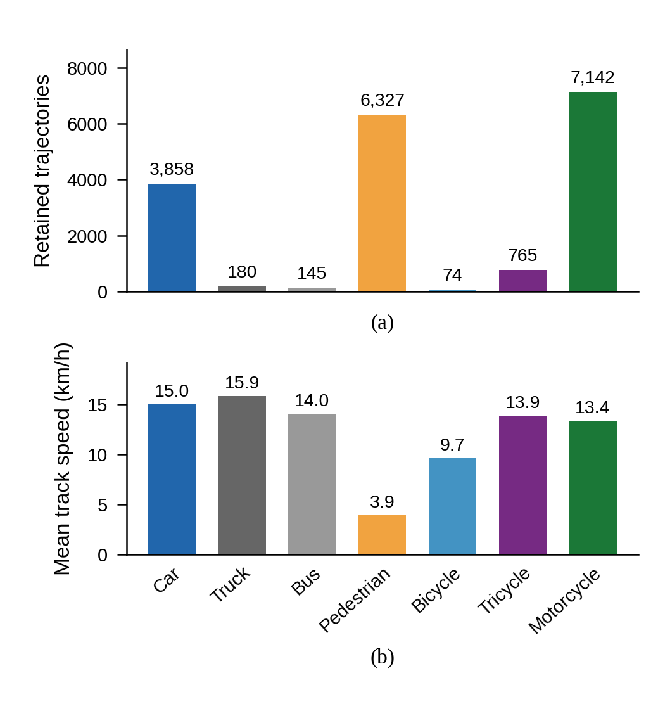
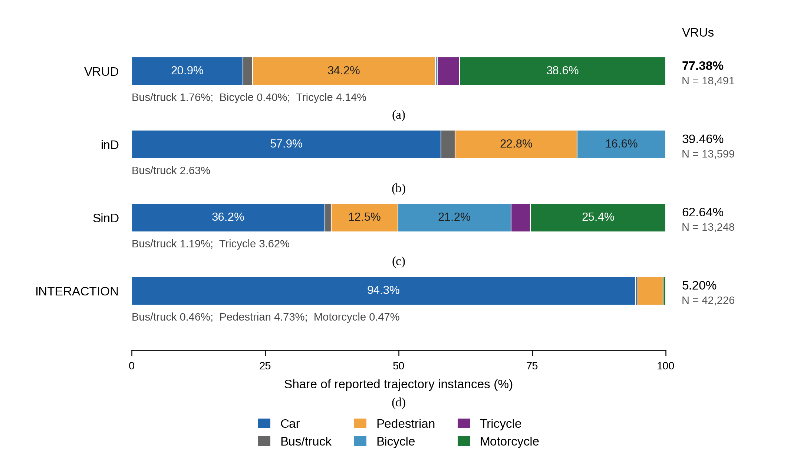
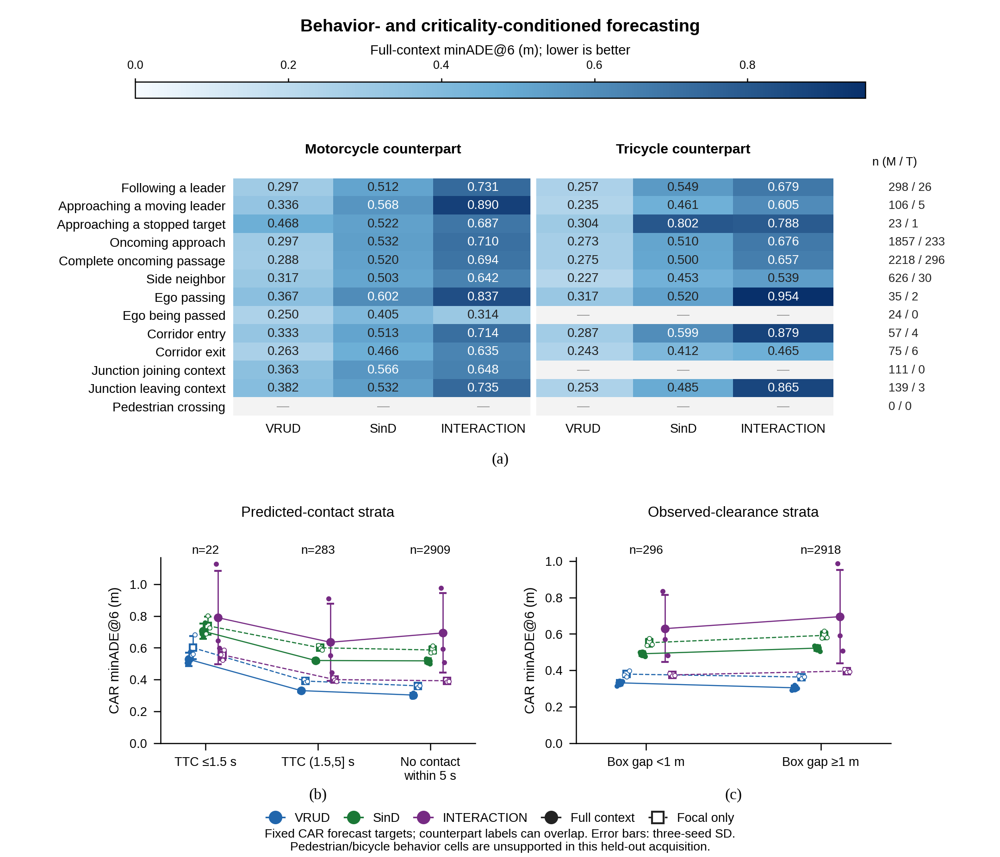
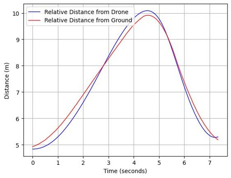
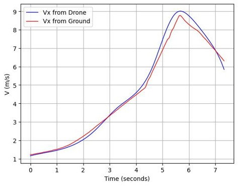
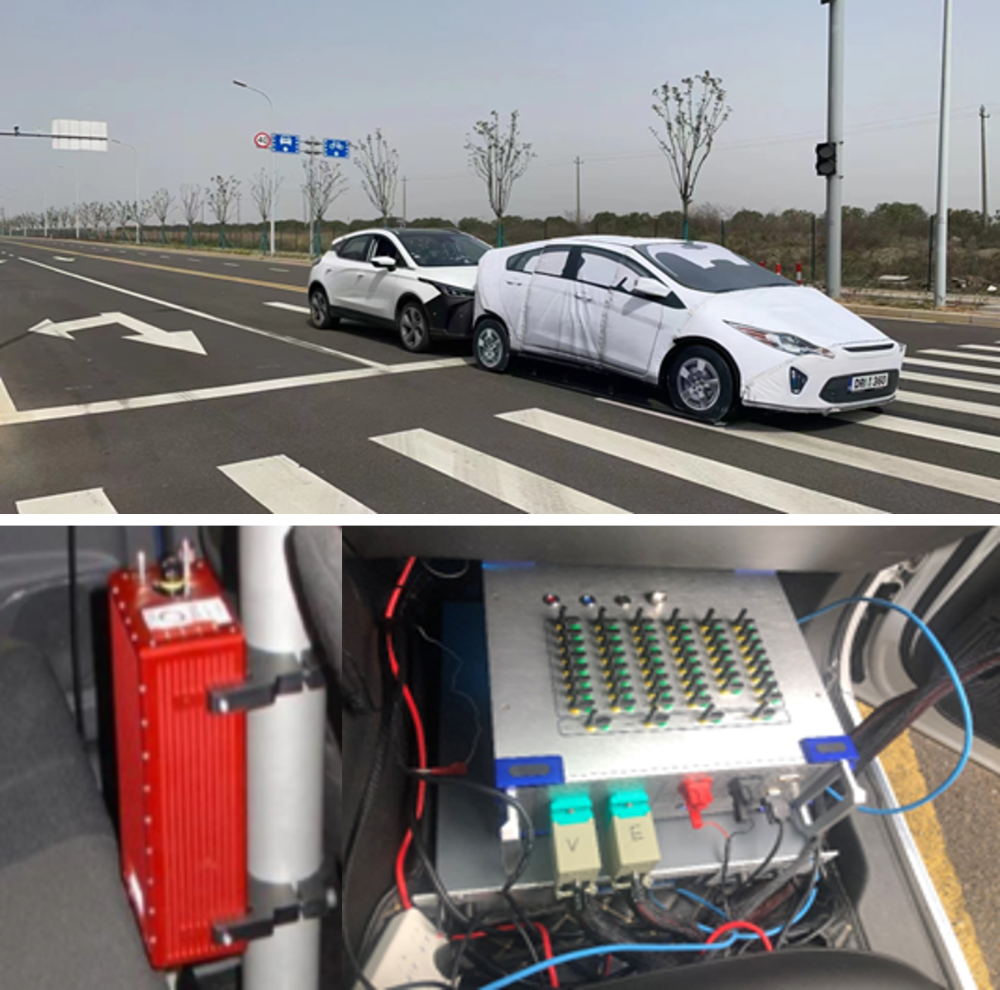

Manuscript Overview
Urban mixed traffic requires automated vehicles to anticipate diverse interactions with vulnerable road users (VRUs), yet trajectory data describing these interactions in less structured road environments remain limited. This limits the development of prediction models and the selection of representative scenarios for automated-driving evaluation. We present VRUD, a drone-based trajectory dataset collected at three urban mixed-traffic sites, covering 8.11 hours and seven road-user categories. VRUs constitute 77.38% of its retained trajectory inventory. We adapt scenario.center-based behavior extraction to organize the data and characterize vehicle–VRU interactions through complementary spatial and temporal safety-surrogate measures. Analysis reveals behavior- and participant-dependent differences in clearance and temporal separation. A Trajectron++ benchmark using VRUD, SinD, and INTERACTION shows lower errors on the held-out VRUD acquisition with VRUD-specific training, and further gains from neighboring trajectories for the VRUD-trained model. Behavior-stratified evaluation of this model's car forecasts identifies larger errors in several transition contexts than during following or completed opposing passage. These findings support evaluating prediction across interaction conditions and developing test libraries that consider both behavioral coverage and safety criticality. VRUD can support future research on interaction-aware trajectory prediction, cross-domain generalization, and safety-critical scenario mining and generation for automated-driving evaluation in mixed traffic. Dataset access requests: https://zzi4.github.io/VRUD/.
Authors
Jilin University · Heriot-Watt University · Durham University · DRIVEResearch
Dataset Inventory
Seven categories distinguish cars, trucks, buses, pedestrians, bicycles, tricycles, and motorcycles. Inventory trajectories satisfy a rounded recorded travel-distance threshold of at least 2.00 m. Identities are local to each recording; repeated appearances across recordings are not deduplicated people. Motion and eligibility rules for behavior analysis and forecasting are defined separately.

Example observations from VRUD. Colors identify participant categories and their recorded paths.
Collection Sites
Sites A and B are residential settings in Shenzhen. Site C adds a mixed-use street with crossings, a side-road junction, storefronts, and roadside stalls. Its 71 complete recordings total 4.40 hours across March 2, 3, 5, and 6, 2026; selection used dates, periods, and duration rather than observed interaction outcomes.

Site A: residential intersection, 41 recordings, 2.41 h.
Site B: residential street, 23 recordings, 1.30 h.

Site C: mixed-use street, 71 recordings, 4.40 h.
Sites A and B were recorded at 4K, nominally 30 fps and 80 m altitude. Those camera settings are not assumed for Site C. Registered OpenDRIVE maps support all three local coordinate frames.
Behavior-Based Organization
The pipeline adapts scenario.center and CRUISE behavior concepts to trajectories and registered road semantics. A fixed car, truck, or bus ego can retain several associated participants and concurrent behavior labels. Following, approach, crossing, neighboring, passing, opposing passage, corridor transitions, and route contexts organize the observations before safety-surrogate analysis.
All 135 recordings are processed. The primary sustained-motion cohort contains 16,944 behavior/process intervals involving 9,662 within-recording pairs. Both actors must have a continuous second at recorded speed of at least 0.5 m/s somewhere in their observed tracks; temporary stops remain. Intervals can overlap across behavior families and process views, so the count is not a count of independent physical encounters.
Pedestrian crossing is supported at matched intersection routes. Other relation detectors have explicit participant and map requirements. Unsupported topology and definitions with insufficient positive evidence remain distinguishable from observed zero counts; complete real-world behavior coverage and human-validated recall are not claimed.
Behavior-Conditioned Interaction Profiles
Observed box clearance, constant-velocity body-contact TTC, exposure, conflict-area PET, and applicable longitudinal measures describe complementary aspects of the extracted intervals. The default TTC horizon is 5 s. Initial model overlap, invalid input, no predicted contact, and finite contact are distinct states; reference cutoffs are not calibrated accident-risk thresholds.


The full 47-panel manuscript summary retains behavior/VRU support, spatial and temporal distributions, and site, motion-rule and observation-quality sensitivities. Open the image for full-resolution inspection.
Examples include close passing with maintained separation, different opposing-passage clearance distributions for tricycles and motorcycles, and sequential or simultaneous conflict-area occupancy in pedestrian crossings. These are tendencies of the observed sample, not inferred personal intentions or a universal risk ranking.
Inventory Statistics

Counts and track-weighted mean recorded speeds for the distance-filtered inventory. Waiting periods remain in retained tracks.

The updated VRUD inventory alongside the manuscript's external reference counts. Reference cohorts and movement filters are not harmonized, so these plots are not a controlled density comparison.
Trajectory Prediction and Scenario Diagnosis
A map-free Trajectron++ benchmark compares VRUD, SinD, and INTERACTION under matched training budgets, separately trained neighboring-input ablations, and fixed-budget mixtures. VRUD-specific training improves errors on its held-out acquisition, and neighboring trajectories provide useful predictive information for the VRUD-trained model.

An additional coordinate-reconciled evaluation of 3,214 car forecast windows from one held-out Site C acquisition. Motorcycle/tricycle categories describe counterparts; pedestrian/bicycle behavior membership is unsupported in this subset. Prediction error and safety criticality are distinct quantities.
Data Validation
A separate controlled vehicle-following experiment compares extracted relative distance and target velocity with RT inertial navigation references. These curves describe that experiment; they do not constitute class-wise quality estimates for every trajectory in the inventory.

Relative distance: drone vs. RT inertial navigation

Soft target vehicle velocity (Vx) comparison

Experimental setup with RT inertial navigation equipment
Resource and Version Information
The manuscript's research material contains the following components. A request should identify the three-site inventory dated 29 October 2026 and the components needed. The application response specifies the available package version and permitted use; this page does not imply that a new raw-data release has already been uploaded.
| Component | Contents and interpretation |
|---|---|
| Trajectories and attributes | Recording-local participant IDs, observed frames, positions in meters, heading in radians, footprint dimensions, recorded motion, and seven-category labels; gaps remain explicit. |
| Registered maps | OpenDRIVE maps for Sites A, B, and C in calibrated local frames; geographic east–north orientation is not assumed. |
| Behavior and SSM records | Fixed ego, associated participants, behavior intervals, common-observation series, applicable metrics, missing and invalid states. |
| Evaluation records | Eligibility rules, frozen prediction splits, model/seed results, behavior-linked test indices, and coordinate reconciliation records. |
Read the machine-readable inventory description. Research access remains subject to the terms stated in the application and the supplied package.
Request Dataset Access
Apply through the laboratory application page below.
Open the access request formData Access Application
Apply through the laboratory application page. GitHub issues are no longer a data-request channel. After review, the response provides the download instructions, extraction code, and the vrud-viewer inspection toolkit.
Open the laboratory application pageThe application page describes the distributed release. For the three-site manuscript analysis, specify the research inventory date and requested components so that the response can confirm the corresponding version and availability.
Free Data Processing Service
If you have already collected — or are planning to collect — drone-view traffic flow videos in urban or mixed-traffic environments, we are happy to help with data processing.
We offer free small-batch data processing, which can include:
- Object detection and multi-class tracking
- Trajectory extraction and coordinate transformation
- HD map generation (OpenDRIVE format)
- Behavior-based interaction scenario organization and safety-surrogate analysis
Processed results will be delivered back to you by email.
For large-scale processing, commercial licensing, or any collaboration inquiries, reach us at:
Citation
The following citation identifies the VRUD preprint. The research inventory summarized on this page reflects the manuscript update dated 29 October 2026.
@misc{wang2026vruddronedatasetcomplex,
title={VRUD: A Drone Dataset for Complex Vehicle-VRU Interactions within Mixed Traffic},
author={Ziyu Wang and Hongrui Kou and Cheng Wang and Ruochen Li and Hubert P. H. Shum and Amir Atapour-Abarghouei and Yuxin Zhang},
year={2026},
eprint={2604.01134},
archivePrefix={arXiv},
primaryClass={cs.RO},
url={https://arxiv.org/abs/2604.01134},
}